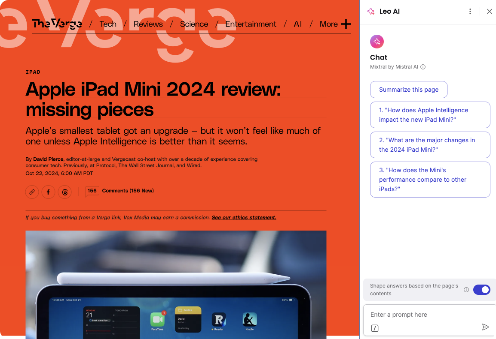

Overview
As AI assistants become integrated into browsers, Brave wanted to develop Leo - an AI companion focused on privacy and user control. This case study covers the foundational research that shaped Leo's MVP features and design.
The Challenge
Brave needed to understand how users would interact with an AI assistant within their privacy-focused browser. Key questions included what features would provide the most value, how to balance convenience with privacy, and how to differentiate from competitors.
Research Approach
We conducted a comprehensive research program including:
- 20 in-depth interviews with existing Brave users across different technical proficiency levels
- Competitive analysis of browser-integrated AI assistants
- Feature prioritization workshop with stakeholders
- Concept testing of 3 different interaction models
- Privacy sensitivity assessment for AI features
Key Findings
Our research revealed several important insights:
- Users valued transparency about when and how AI was being used
- The ability to control data sharing on a per-session basis was highly desired
- Context-aware help (understanding the current webpage) was the most valued potential feature
- Users were skeptical of AI responses and wanted verification options
- Integration with existing Brave features like Shields was expected
Recommendations & Impact
Based on our research, we recommended several key features for the Leo MVP:
- Clear indication when Leo is active and what data it can access
- Granular privacy controls accessible directly from the Leo interface
- Contextual awareness with source citations for information
- Integration with Brave Search for verification
- Progressive disclosure of advanced features
Results after beta launch:
- 87% of test users activated Leo at least once
- 72% continued using Leo after first week
- Privacy controls were actively adjusted by 63% of users
- Context-aware features received highest satisfaction ratings